Ocupa cerca de metade da tela, para que as notícias apareçam sem rolar. Troca de slide com esmaecimento a cada 7–8 segundos e pausa com o mouse.
O arquivo enviado tem uma cor só, então ele pode ser aplicado no verde original ou em branco sobre fundos escuros. No portal, o nome da Secretaria ao lado do brasão é escrito em texto, não em imagem: fica nítido em qualquer tela e é lido por leitores de tela.

Os verdes do site oficial (petróleo e turquesa, com a fonte Montserrat) ficam na estrutura: barra da Prefeitura, cabeçalho, menu, rodapé e títulos. No meio da página entram quatro cores vivas que o portal da Prefeitura não usa (amarelo, lilás, coral e anil), dando à Educação identidade própria. Cada combinação de texto foi medida pelo critério de contraste do eMAG/WCAG (mínimo 4,5 para texto comum; 3 para texto grande).
#004348Barra da Prefeitura, menu, rodapé, títulos, botão principal✓ texto branco 11,1#24a9b3Cor-assinatura da Prefeitura: linhas, ícones, detalhestexto branco 2,8: só como detalhe; petróleo sobre ela 3,9#127882Botões e links sobre a turquesa✓ texto branco 5,2#339558Só no brasão e em detalhes; não é usado em textotexto branco 3,8: só títulos grandes#f5b700Chamadas de ação, avisos informativos✓ texto petróleo 6,2#e8604c · #c2412dAvisos urgentes, eventos✓ texto branco 5,1 (escuro)#3b4fb8Educação em Números, programas, gráficos✓ texto branco 7,0#7356c4Área do Estudante, conteúdos✓ texto branco 5,4#e6f6f7 · texto 13,0#fff4d1 · texto 13,1#efeafa · texto 12,2#fdebe7 · texto 12,5#eaedfa · texto 12,4#f3f7f7 · texto 13,4A mesma letra do site da Prefeitura
Pesos 600, 700 e 800. Liga o portal à identidade oficial logo na primeira leitura.
Desenhada para leitura em tela, com letras abertas que continuam legíveis no celular e para quem aumenta a fonte. Corpo de 17 px, entrelinha de 1,6, até 65 caracteres por linha.
Prazos, documentos e como matricular seu filho na rede municipal.
Educação infantil
Passe o mouse ou toque: o botão sobe, ganha sombra e a seta avança. Com movimento reduzido ligado no aparelho, nada se mexe.
Cada serviço ganha uma das cores vivas. O ícone gira de leve e se preenche ao passar o mouse; o card sobe. Os que ainda não existem aparecem como “em breve”, sem reagir.
Prazos, documentos e como matricular seu filho na rede municipal.
AcessarEstudo, reforço, vestibulinhos e contato com professores.
Organograma, equipe gestora e como a Secretaria está organizada.
AcessarEscolas, alunos, vagas e indicadores da rede municipal.
AcessarEncontre a escola do seu filho e o supervisor responsável.
Buscar escolaReclamações, sugestões, elogios e denúncias, por áudio ou texto.
Informativo vira faixa discreta no topo. Urgente abre por cima de tudo. Cada visitante vê uma vez, fecha com um clique ou com a tecla Esc, e o aviso some sozinho na data de fim.
Exemplo de aviso urgente sobre todo o conteúdo, acessível por teclado e leitor de tela.
Entendimunicipios.tema, editáveis pelo painel: outro órgão troca a paleta sem mudar código.Proposta para aprovação · 12/10/2026 · verdes medidos na tela renderizada de www.paulinia.sp.gov.br (a 1ª versão usou o marinho das variáveis CSS do site, que não aparece na tela; corrigido). Brasão: arquivo enviado em 12/10/2026, aplicado em verde e branco.